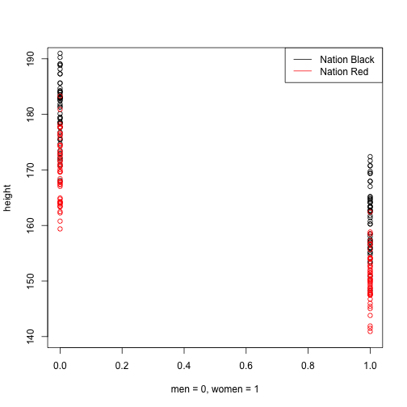

- Why Model?
- How Model?
- Which Model?
Predictive Analysis
통계 & 기계학습 기본 개념
(주)퀀트랩
Analytic Director
김형준
Contents
Why?
Why?
설명 : 선형 모형(Linear Model) 선호
키가 170이상이면 남자
키가 1cm 증가할 때마다 몸무게가 1kg 증가
월 소득이 100만원 증가할 때마다 몸무게가 1kg 감소
월 소득이 1000만원이상이면 몸무게 증가없음(선형 VS 비선형)
예측 : 비선형 모형(Non-Linear Model) 선호
몸무게는 (log(키) + log(나이 - 50))*(소득수준의 제곱)
키와 나이의 Gaussian Kernel에서 .3이 높아지면 몸무게는 1kg이 증가한다
Kernel
설명 + 예측 : 풀어야 할 숙제
키와 성별
키와 성별
키와 성별

키와 성별, 국가


키와 성별, 국가

키와 성별, 국가

키와 성별
키와 성별, 국가

키와 성별, 국가
키와 성별, 국가

키와 성별, 국가

공분산(Covariacne)과 상관관계(Correlation)
- 두 변수의 변화 사이의 관계, 한 변수가 변화함에 따라 다른 변수가 변화하는 경향성
- 일반적으로 선형관계를 나타냄
## [1] 0.8194
더 생각해 볼 문제들
상호작용
Black Nation에서는 키가 남 > 여
Red Nation에서는 키가 여 > 남
-> 성별과 국가 상호작용 추가
선형관계
-> 문제는 항상 선형관계를 만족하는가?
-> 나이와 키는 비선형관계
Curse of Dimensionality
-> 많은 변수로 예측하는 것이 항상 좋은 것인가?
Model Complexity

| Estimate | Std. Error | t value | Pr(>|t|) | |
|---|---|---|---|---|
| (Intercept) | -8.29 | 11.74 | -0.71 | 0.49 |
| heights | 0.49 | 0.07 | 7.56 | 0.00 |

Over-Fitting(과적합)
How? Model Evaluation
How? Model Evaluation
Cross-Validtion
- Training Set, Validation Set, Test Set
- K-fold
How to avoid Over-fitting
- Penality of Model Complexity (MSE 보정)
- Regulization (Lasso, Ridge, Elastic Net)
- Bayesian
- Drop Out, Bagging, Feature Bagging
Which Model?
Supervised Learning
- Y를 알 때
- P(Y|X) : Discriminative Model
Unsupervised Learning
- Y를 모를 때
- P(X)
- P(Y,X) : Generative Model
참고